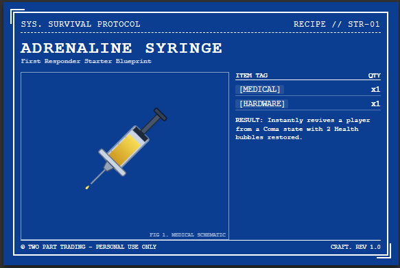
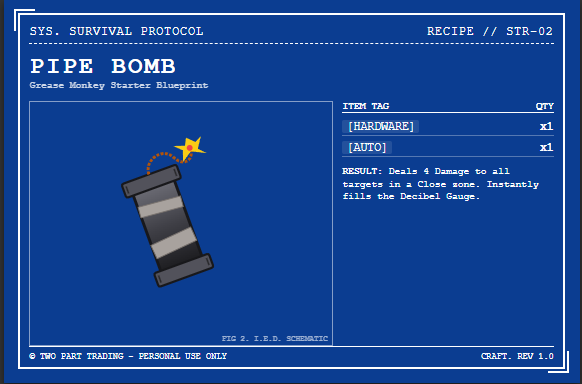
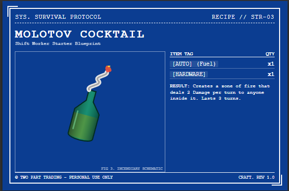
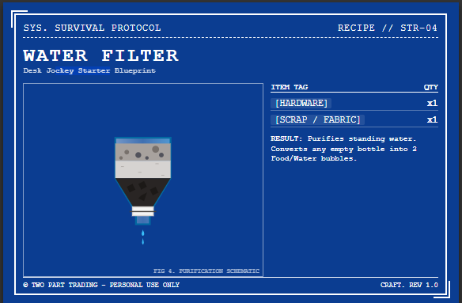

GAME MASTER'S GUIDE
THE OUTBREAK
DOSSIER
FEATURING DOSSIER 00: END OF THE LINE
PLAYERS: 2-5 | EST. PLAYTIME: 3-5 HOURS
PUBLISHED BY TWO PART TRADING STORE
GAME MASTER'S GUIDE
FEATURING DOSSIER 00: END OF THE LINE
PLAYERS: 2-5 | EST. PLAYTIME: 3-5 HOURS
PUBLISHED BY TWO PART TRADING STORE
YOU ARE THE WORLD. AND THE WORLD IS UNFORGIVING.
As the Game Master (The Overseer) in Survival Protocol, your job is not to actively kill the players. The mechanics, the starvation, and the Horde will do that for you. Your job is to present a gritty, logical, and terrifying reality, and let the players make hard choices.
SECTION ONE // MASTER DIRECTIVES
Every check requires rolling two six-sided dice (2d6) and adding the relevant Stat bonus. The GM sets the Target Number (TN) for success based on difficulty.
Criticals and Fumbles: Rolling double 6s is an automatic critical success. In combat, this doubles the base damage. Rolling double 1s (snake eyes) is an automatic critical failure.
Some gear, environments, or tactical situations alter your odds.
Advantage: Roll 3d6 and keep the two highest dice.
Disadvantage: Roll 3d6 and keep the two lowest dice.
Roll Group Initiative. 2d6 + Brains for the Survivors. A flat 2d6 for the Horde. Highest roll takes their entire group's turns in any order. The 2-Action economy is strict: Moving, shooting, reloading, and handing an item to an ally all cost 1 Action.
Players must track Health, Stamina, and Food. If a bar hits zero, they take a cumulative -1 to all rolls. Do not remind them to mark off Food or Stamina during travel—if they forget and you catch them, apply the penalty immediately.
The Horde operates on the "Proximity Threat" rule. They attack the closest loud noise. You track this using the 6-segment Decibel Gauge.
When the 6th segment of the gauge is filled, it "Pegs Out." You immediately interrupt the turn order, clear the gauge back to zero, and trigger an Ambush Phase. Walkers burst through windows or drop from ceilings into close combat with the players.
Players roll 2d6 + Brains to search a room. On a success, do not give them an item yet. Give them an Item Tag based on the location (e.g., searching a clinic yields a `[Medical]` tag). During downtime or when they open their packs, you roll on the Drop Tables (Page 15) to resolve exactly what that tag represents.
SECTION TWO // SCENARIO FILES
The Situation: The players are passengers on a night-line motorcoach halted at a military checkpoint 10 miles outside Meridian City. The military is quarantining civilians, but the infection has already breached the perimeter.
Ask the players for their Occupations. A quick Brains roll reveals the soldiers are terrified and treating this like a biological threat, not a flu. Before players can act, a passenger begins coughing violently.
Route A (Comply & Breakout): Stripped of gear, players are trapped in a pen. They must use Strength (TN 9) to break the fence as Walkers swarm the camp.
*The Transition:* You break the lock just as the fence bows under the weight of the dead. You sprint through the abandoned triage tents, the screams fading into the rain. You run until your lungs burn and the sky begins to lighten. You have reached the edge of Meridian City.
Route B (The Woods): Players sprint into the freezing forest. Suffer -2 Night Ops penalty. Failed Brains navigation rolls add +1 Decibel tick as they are hunted.
*The Transition:* The darkness of the pines is absolute. You navigate by lightning, slipping in the mud, until the treeline abruptly breaks. Your boots hit the wet asphalt of a frontage road just as the gray dawn reveals the Meridian City skyline.
Route C (The Highway Push): Players hijack a Humvee or the bus. Roll Strength/Brains to Ram the barricade. Destroys 30% Vehicle Integrity and causes 1 whiplash damage to all.
*The Transition:* The vehicle smashes through the concrete, the chassis screaming as you hit the open highway. You leave the chaos miles behind. As the engine finally sputters and dies from the impact damage, the sun crests the horizon, illuminating the city limits ahead.
The Setup: The players have escaped the checkpoint and arrive on the outskirts of Meridian City (Sector A-1) as dawn breaks. Deduct 1 Food and 1 Stamina from all players for daily upkeep.
Present them with three shelter options to claim as their first Safehouse:
Once secured, introduce the Downtime Phase (Watch Dial) and let them spend 1 Action to barricade or heal.
The Hook: While searching the Safehouse, a player finds a hand-crank emergency radio.
The Trek: Traveling from Sector A-1 to Sector C-3 requires moving through two Hostile blocks. Deduct 1 Stamina from everyone. Ask for Stealth rolls; failures build the Decibel Gauge.
The Scene: The players arrive at the Pharmacy Depot. The soldiers are dead on the roof, but the steel vault is locked. Opening the vault requires a Brains roll (hotwire) or Strength roll (crank) at TN 11.
As soon as the vault cracks open, instantly fill the Decibel Gauge to maximum.
Tactics: The Gronk has 8 Health. Light melee deals 0 damage. The Walkers will grapple players, draining their actions so they cannot run. Force them to use teamwork or shoot the `[Combustible]` barrels in the alley.
The Spoils: Everyone gains 100 XP (Level Up!). Roll twice on `[Medical]` and `[Food]` drop tables. Award 10 Value in Ammo.
Campaign Hooks:
SECTION THREE // OVERSEER ASSETS
THREAT BOARDS & DECIBEL GAUGE
OVERSEER EYES ONLY // SECTOR PLACEMENTS
ROLL 2D6 WHEN RESOLVING A FOUND ITEM TAG.
| [MEDICAL] TAG RESULTS | |
|---|---|
| 2-4 | Soiled Bandages (1 Durability) |
| 5-8 | Painkillers (Restores 1 Health) |
| 9-11 | Infection Suppressant (Clears 1 Box) |
| 12 | Trauma Kit (Restores all Health) |
| [FOOD] TAG RESULTS | |
|---|---|
| 2-4 | Spoiled Rations (Restores 0, cures hunger) |
| 5-8 | Canned Goods (Restores 1 Food) |
| 9-11 | MRE (Restores 2 Food) |
| 12 | Pristine Water Jug (Restores 3 Food) |
| [HARDWARE] TAG RESULTS | |
|---|---|
| 2-4 | Rusted Nails & Screws (1 Crafting Use) |
| 5-8 | Duct Tape (Restores 1 Weapon Durability) |
| 9-11 | Power Tools (+1 to Safehouse Repairs) |
| 12 | Portable Generator (Powers Base for 1 Wk) |
| [AUTO] TAG RESULTS | |
|---|---|
| 2-4 | Scrap Metal (Fixes 5% Vehicle Integrity) |
| 5-8 | Siphoned Gas (Restores 1 Fuel Bubble) |
| 9-11 | Full Jerrycan (Restores 3 Fuel Bubbles) |
| 12 | Car Battery (Used for high-tier crafting) |
| [WEAPONS & AMMO] TAG RESULTS | ||
|---|---|---|
| 2-4 | Loose Handgun Bullets | Adds 3 checks to Sidearm ammo track. |
| 5-8 | Heavy Melee Weapon | Fire Axe, Sledgehammer (Base Dmg 2). |
| 9-11 | Box of Ammunition | Fills 1 entire Weapon ammo track. |
| 12 | Pristine Firearm | Long Gun (Rifle/Shotgun) with full ammo. |
STARTER OCCUPATION RECIPE CARDS




TACTICAL BLUEPRINTS & MAPS
STOREFRONT (MAIN LOBBY)
SHATTERED GLASS DOORS (VULNERABLE)
STORAGE CLOSET
SECURE DOOR
GARAGE BAY
ROLL-UP DOOR
SECURE COMMUNICATOR LINK
The Outbreak Dossier is just the beginning. As your players secure their stronghold and push deeper into the Quarantine Zone, you will need more tools to oversee the apocalypse.
SCAN THE QR CODE LOCATED BELOW TO RESUPPLY.

AVAILABLE OVERSEER REQUISITIONS:
justindavis882.github.io/SurvivalProtocol // STAY ALIVE
DOSSIER 00 is the ultimate Game Master's guide to running Survival Protocol. Inside this classified manual, you will find everything you need to run the fast-paced, highly tactical 2d6 engine in a training story.
Included is Dossier 00: End of the Line, a harrowing introductory scenario that throws players onto a quarantined motorcoach on Day Zero. Manage the Decibel Gauge, trigger Horde Ambushes, and watch your players fight tooth and nail to secure their very first Safehouse.
PLAYERS: 2-5 | EST. PLAYTIME: 3-5 HOURS
DOCUMENT CLASSIFICATION: OVERSEER_A